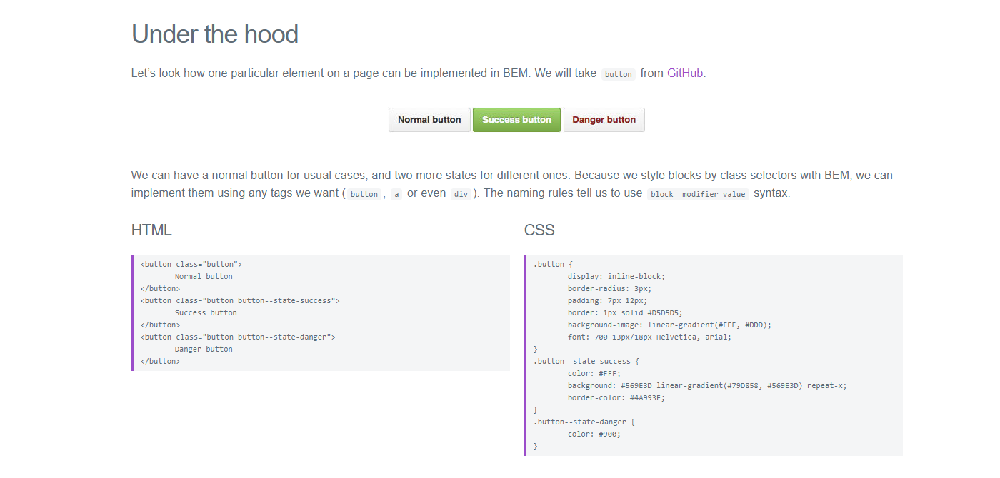

BEM - CSS Naming Methodology: An Introduction
BEM is a naming methodology that creates a set of rules that tries to make CSS more ordered, structured, scaleable, readable and maintainable.
BEM encompasses three key elements:
// Block
-- Standalone entities that are meaningful on their own: eg: - header, container, menu, checkbox, input
// Element
-- A part of a block that has no standalone meaning and is semantically tied to its block: eg: - menu item, list item, checkbox caption, header title
// Modifier
-- A flag on a block or element. Use them to change appearance or behavior: eg: - disabled, highlighted, checked, fixed, size big, color yellow
Structure
Looking at BEM in context
This screenshot of the github website homepage shows some common elements of a webpage, and describes what category they would come under in the BEM naming methodology

Looking a Modifiers
Below is an example of the BEM methodology applied to modifying an element.
In the screenshot below, it shows us the same button in three different states:
- The first state is a you would see it normally.
- The second state is as it would appear once clicked and for whatever reason it was clicked for was successful.
- The third state is as it would appear once click and for whatever reason it was clicked for was unsuccessful.

Example in Practice
Below is an example of the BEM methodology in practice.
Here we have an unordered list housing list items, where the unordered list is the Block, and the list items are the Elements. The class applied once the list item has been clicked/hovered, is the Modifier
The block is named something semantic, while the element is named the block class name plus a semantic name for the element. The modifier extends this naming further and is named the block class name plus a semantic name for the element plus a semantic name for the modified aspect.
Convention says that the block class name and the element name are sperated by a double underscore, while the element name and the modifier name are seperated by a double hyphen.
Notes on BEM
- This naming provides a very flat CSS structure
- It removes the need to have nested naming eg: - ul li {padding: 0;} OR nav.footer ul li span {margin-right:10px;}
- Everything that is a block or an element can have it's own class applied
- The naming is semantic
- One possible con is that elemnts on a page end up having long class names, however, I think that the order applied by this means that it lacks the confusion that arbitrary named elements
- The processing time of applying class names is quicker than using
Further Resources
- https://www.youtube.com/watch?v=ss9JMVv8rmI -- really good explanation of using BEM with SASS
- http://getbem.com/introduction/
- https://www.youtube.com/watch?v=lpxXHkZSl1Q
- https://css-tricks.com/bem-101/
- http://atomicdesign.bradfrost.com/chapter-2/
- https://codepen.io/jeryj/pen/YWwoqd
Thank you!